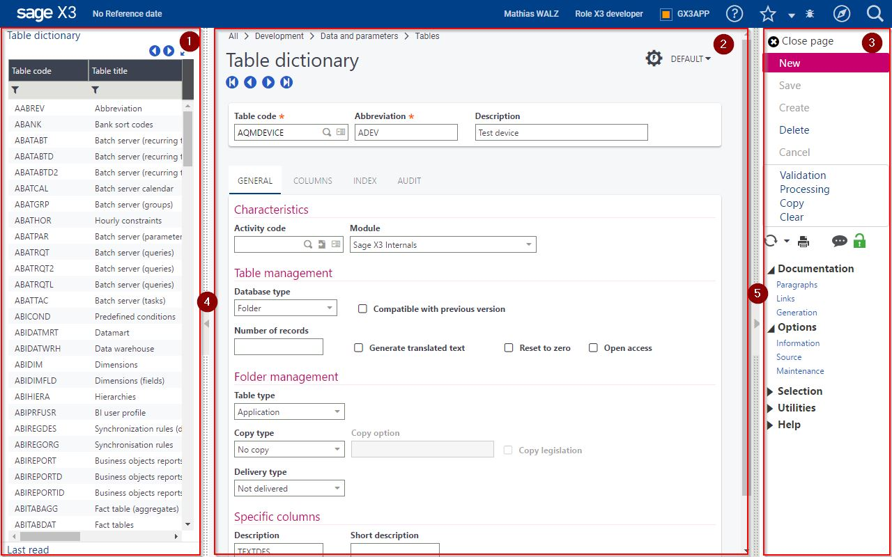
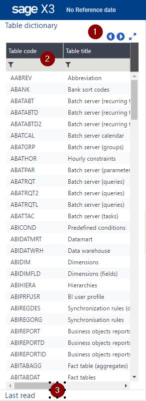
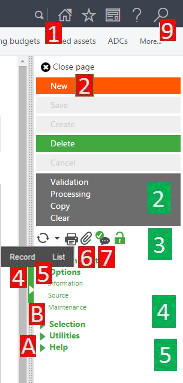
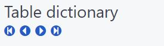
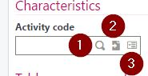
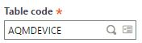
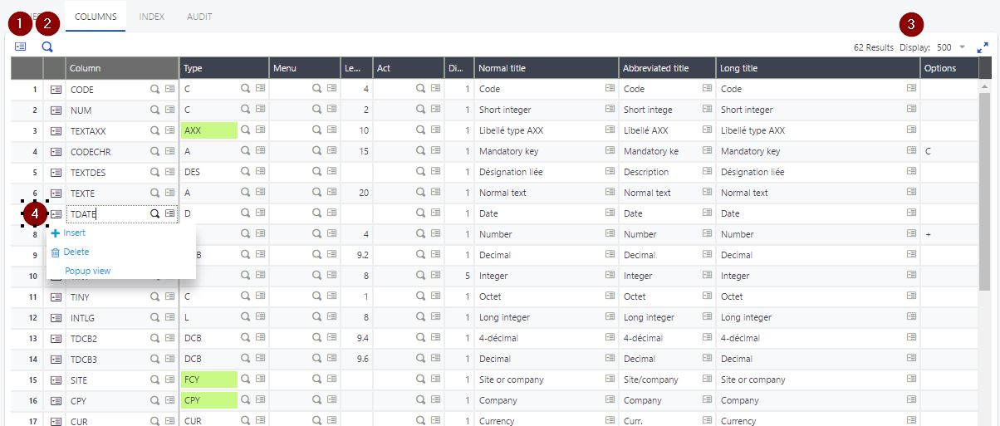
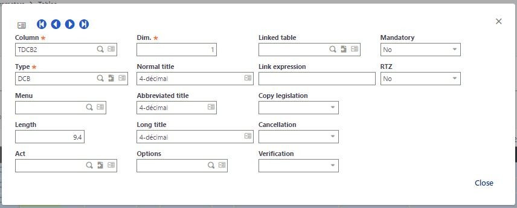

Classic pages
The web client displays pages that can be portal pages, landing pages, classic pages or edit, query, details or summary pages.
A Classic page is based on a version 6 windows design. This mode is an emulation of version 6, which does not need any modification in the version 6 repository to work. The elements stored in the screen dictionary, action dictionary, window dictionary, as well as the scripts designed for version 6 are used in this mode. This is very important to ensure a smooth transition to the version 7 technology.
Therefore, the basic principles of the version 6 ergonomics are still present:
- The interface is piloted by the server.
- A blocking control cannot be skipped and must be fulfilled before another field can be filled.
- The control is synchronous.
Some changes were made to enhance the user interface within these constraints:
- The page style is very close to the Version 7 native style.
- The links are no longer hidden (right click is no longer used).
- The page uses the whole space of the windows.
- personalization is available on Classic pages, but it must be used carefully because the window is still piloted by the server.
- The different shortcuts that existed in version 6 (
F2,F5,F6,F9,F11, andF12function keys) have been replaced by a combination of theESCkey and the same function key. This is because the used function keys are managed by the browsers and might have a different use depending on the browser. For more information, see Keyboard shortcuts.
This document details how the Classic mode works.
| Main behavior | Page management | Local navigation | Time-out | Global organization |
| The upper bar | The left list | The right panel | ||
| The main page | Actions on fields | Grid management |
Main behavior of a Classic page
Page management
When a Classic page is opened, a version 6-type connection is used with a Sage X3 process. The first time it opens the page, the connection time can take several seconds (as it was for a version 6 connection).
Closing a Classic page will leave the current function and lose the data that was not modified. It is the same as using the Back button, or as if another URL is typed. If work is pending, the user will be asked for confirmation.
If the user tries to close the browser window, there is usually a window opened by the browser that requests a confirmation.
If the user decides to logout by using the icon on the header bar, no confirmation is required and the browser will return to the login page.
Local navigation
The ability to open a function that stacks an additional page is also possible with the Go to function link (see above). The page that opens is exactly the same as the page displayed in version 6 when selecting the F7 key:
Timeout
The Classic session is managed with the version 6 protocol; therefore, a time-out is possible. The time-out delay set up is defined in the following document. When this happens, there will be a warning message which allows to cancel the session termination.
Global organization of the Classic page
The organization of a Classic page is the same as a version 6 page, except for the menus and buttons that are located on a right vertical bar. The following can be found on this page:
- A left list (if applicable) with several boxes (1).
- A central page where the data is located (2).
- A right bar with additional links (3).
The following screen is an example of a Classic page with some indicators:

The left and right panels can be hidden to provide more space to the application data. Icons (4) and (5) close the right and left panel; however, the ESCF11 shortcut closes both panels in one operation. To reopen the panels if they are closed, select ESCF11.
The upper bar
The upper bar has no major changes in Classic mode. A breadcrumb has been added in version 9, that gives the path to go to the function from your default navigation page.
The left list
|  |
The left list is used exactly as version 6 for selecting and picking operations. When a version 6 "object" is used (the corresponding terminology for Version 7 native pages is a "CRUD operation page"), this left list can be used to select a record by clicking a line. Filtering is possible on the first line of the list (2) by entering values that can be prefixed by an operator. The default operator used is started with. The Back and Next buttons located at (1) are used to access the previous or next page of records in a list. Several left panels may exist especially a last read panel that lists the last accessed records. Use the link (3) to access this panel. |
The right panel
On the right list, you will find all the global links associated with the page. They are placed in different panels:
|
 |
The main page
The main page contains different fields that are defined by the application.
For version 6 "object functions" (CRUD operations), under the title, a set of links allows you to navigate from one record to the next:

Actions available on a field
For fields, the right click has been replaced by small icons as shown on the following screen:

- The magnifying glass (1) allows a selection like the
F12shortcut did in version 6.ESCF12is also available on the current field. - The arrow icon (2), known as Jump to, allows you to go to the record identified as a reference by the current field (version 6 "tunnel" function like the
F9shortcut did in version 6.ESCF9is also available on the current field. - The action list icon (3) provides access to a menu when you click it. This replaces the right click option that was used in version 6.
Another important feature that is common in browser pages is the mandatory field, which is emphasized by an asterisk after its label:

Grids management on Classic pages
The grid management works differently from version 6. No longer is there intermediate focus on a line before having focus on a cell. Therefore, a single click brings you directly to edit mode on a cell, and double-clicking is no longer necessary like it did in version 6.
Esc on a line operates the same as it did before when leaving a line modification, and Enter on a field in the grid goes to the first field located after the grid.
The grid management has an additional set of features that can be seen on the following screen:

-
The number of lines is displayed on the right upper side (3) of the grid. The page size selector can be used to choose the number of pages being displayed; clicking the page number brings you directly to the right page. If the number of lines displayed exceeds the size of the display window, you must scroll down to see the bottom of the grid.
-
Global actions are available on the left upper side of the grid. This includes the complete deletion of the lines, and also a pop-up menu (1) that provides additional functions such as the personalization on the grids and the Excel export. The grid can be searched by using the magnification icon (2)
-
Deleting, copying, cutting a list of lines is possible by selecting a line (clicking on it), and then clicking a second line in combination with the SHIFT key. In the pop-up menu (1) you will find the action to execute (which depends on the options defined for the block).
-
The functions available on a line that were implemented with a right click are now implemented with a set of icons (3) located at the beginning of the line. This includes insertion and deletion of lines, other link defined by the application developers, and access to the grid page mode that functions the same as it did in version 6:
